Operating Documentation
Direction 5670006, Rev# 1
Discovery MR750w GEM Service Methods
Module Version 6.0, Version Date 8/4/11
Operating Documentation |
| Required Persons | Preliminary Reqs | Procedure | Finalization |
|---|---|---|---|
| 2 | 3 hours | 5 hours | 3-4 |
This procedure describes the replacement or installation process of the eXtreme Resonance Module Revision W (XRMw) Busbar in the MR750w 3.0T magnet.
There are two separate busbars on the MR750w system; XZ busbar assembly and the Y busbar assembly. Typically, only one busbar will be replaced at one time.
Illustration 1: Y and XZ Busbars
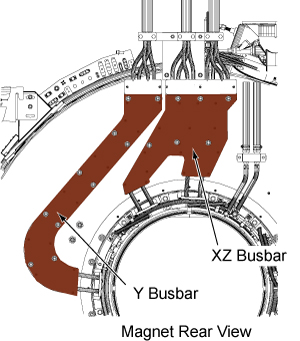
| Item | Qty | Effectivity | Part# | Manufacturer | |
|---|---|---|---|---|---|
| Non-magnetic Tools | 1 | - | 5112581 | - | |
| Non-ferrous Safety Shoes | 1 | - | - | - | |
| Safety Glasses | 1 | - | - | - | |
| Cut Resistant or Leather Gloves | 1 | - | - | - | |
| Arc Flash PPE | 1 | - | - | - | |
| Item | Qty | Effectivity | Part# | Manufacturer | |
|---|---|---|---|---|---|
| XZ XRMw Busbar | 1 | - | See FRU Manual | - | |
| Y XRMw Busbar | 1 | - | See FRU Manual | - | |
| ||||
| Strong Magnetic field! | ||||
| ferrous materials can become dangerous projectiles in the presence of the magnetic field produced by the magnet. | ||||
| Do not bring any ferromagnetic tools or equipment into the magnet room. |
| ||||
| ELECTRICAL SHOCK HAZARD! | ||||
| Contact with the connectors leading to an energized power supply can cause electrical shock. | ||||
| Follow lockout/tagout procedures while performing services to electrical connection components. |
| Condition | Reference | Effectivity |
|---|---|---|
Remove the patient bridge. | - | |
Remove magnet enclosure rear end bell. | - | |
Move rear pedestal away from the magnet to allow access to the busbars. Note: Slack in the cables going to the rear pedestal should allow it to be moved back without disconnecting cables. However, it is possible that some cables may need to be disconnected. | - | - |
Follow all safety lockout/tagout procedures:
Remove four M4 x 10mm screws and the Safety Cover Top (clear plastic) from the busbar.
Illustration 2: Y Busbar Safety Cover
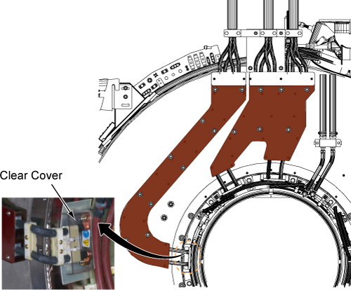
| NOTE: | DO NOT remove the clamps on the busbar leads. |
Remove two M10 brass nuts and Nord-lock washers that secure the busbar lugs to the coil. Slide the busbar terminal lugs off of the studs at the coil.
Illustration 3: Removing the Brass Nuts and Nord-lock Washers - Coil End
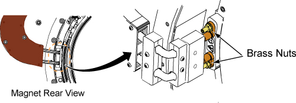
At the top of the busbar, remove two screws and the plastic cover from the busbar.
At the top of the busbar, remove the four M10 brass nuts and Nord-lock washers that secure the busbar lugs to the magnet. Slide the busbar terminal lugs off of the studs on the busbar.
Illustration 4: Disconnecting the Gradient Power Cables
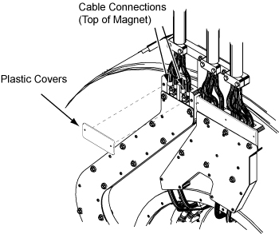
Remove the ten brass nuts and G10 washers that secure the Y busbar to the magnet.
Illustration 5: Y Busbar Mounting Points
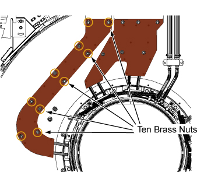
| NOTE: | Observe the following:
|
The busbar assembly can now be removed from the magnet.
Make sure a the rubber bushings (smaller side faces out) are on each mounting stud. Make sure the coil-side mating surface is clean and void of epoxy.
Illustration 6: Rubber Bushing
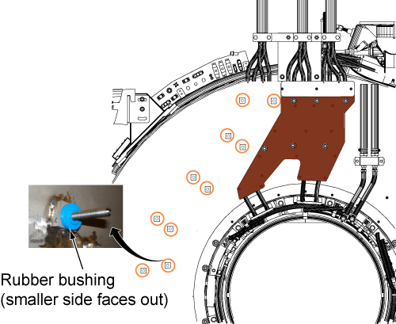
| NOTE: | Observe the following:
|
Slide the Y busbar assembly (with leads hanging down) onto the ten mounting studs.
Apply Loctite 271 (approximately 1 or 2 drops) to the threads of each mounting stud and install a G10 washer and brass nut onto each mounting stud.
Starting at the top and moving clockwise between mounting studs, hand-tighten each nut evenly. Again moving clockwise between studs, tighten one full turn (1/2 turn at a time). Conclude when 2-3 threads are showing above each nut.
Illustration 7: Location of Brass Nuts - Y Busbar

Illustration 8: Nord-lock washers

Install the busbar terminal lug to the XRMw gradient coil terminal.
| NOTE: | Observe the following:
|
First install Nord-lock washers (new), then brass nuts, onto the studs of the Gradient. Hand-tighten brass nuts plus a half turn with a 17-mm non-magnetic wrench. Do not overtighten nuts.
Illustration 9: Tighten brass nuts
Use 2 Nylon tie-wrap to secure the safety cover.
Illustration 10: Safety Cover
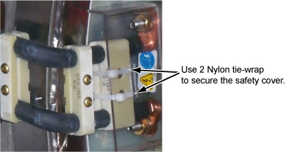
At the top of the busbar (after applying system cables), install Nord-lock washers (new), then brass nuts, onto the studs of the busbar. Hand-tighten brass nuts plus a half turn with a 17-mm non-magnetic wrench. Do not overtighten nuts. At the top of the busbar, install plastic cover with two screws to the busbar.
Illustration 11: Installation Sequence of Terminal
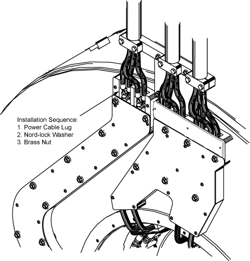
| NOTE: | Observe the following:
|
Remove eight M4 x 10mm screws and two Safety Cover Tops (clear plastic) from the busbar.
Illustration 12: XZ Busbar Safety Covers
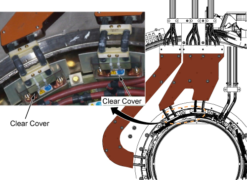
Remove four M10 brass nuts and Nord-lock washers that secure the busbar lugs to the gradient coil.
Illustration 13: Removing the Brass Nuts and Nord-lock Washers - Coil End
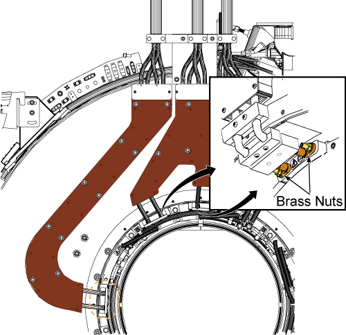
At the top of the busbar, remove three screws and plastic cover from the busbar.
At the top of the busbar, remove eight M10 brass nuts and Nord-lock washers that secure the busbar lugs to the system. Slide the busbar terminal lugs from the studs on the busbar.
Illustration 14: Disconnecting the Gradient Power Cables - Magnet End
Remove the six brass nuts and washers that secure the XZ busbar to the magnet.
Illustration 15: XZ Busbar Mounting Points
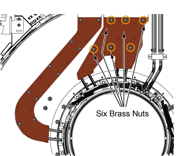
| NOTE: | DO NOT lift the busbar assembly by holding the leads. |
The busbar can now be removed from the magnet.
Make sure a the rubber bushings (smaller side faces out) are on each mounting stud. Make sure the coil-side mating surface is clean and void of epoxy.
Illustration 16: Rubber Bushing
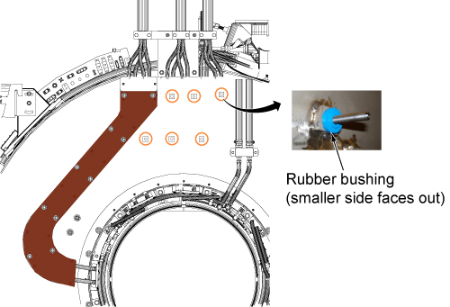
| NOTE: | Observe the following:
|
Slide the XZ busbar assembly (with leads hanging down) onto the six mounting studs.
Apply Loctite 271 (approximately 1 or 2 drops) to the threads of each mounting stud and install a G10 washer and brass nut onto each mounting stud.
Starting at the top and moving clockwise between mounting studs, hand-tighten each nut evenly. Again moving clockwise between studs, tighten one full turn (1/2 turn at a time). Conclude when 2-3 threads are showing above each nut.
Illustration 17: Location of Brass Nuts - XZ Busbar
Illustration 18: Nord-lock washers
Install the busbar terminal lug to the XRMw gradient coil terminal.
| NOTE: | Observe the following:
|
First install Nord-lock washers (new), then brass nuts, onto the studs of the gradient. Hand-tighten brass nuts plus a half-turn with a 17-mm non-magnetic wrench. Do not overtighten nuts.
Illustration 19: Tighten brass nuts
Use 2 Nylon tie-wrap to secure the safety cover.
Illustration 20: Safety Cover
At the top of the busbar, place the terminal lugs of the gradient power cables onto the studs of the busbar.
Illustration 21: Busbar to Gradient Power Cable Connection - Top
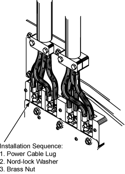
Install Nord-lock washers, then brass nuts, onto the studs of the busbar. Hand-tighten brass nuts plus a half-turn with a 17-mm non-magnetic wrench. Do not overtighten nuts.
| NOTE: | Observe the following:
|
At the top of the busbar, install plastic cover and three screws to the busbar.
Install enclosure for rear end bell. (See Rear End Bell Removal and Installation.)
Install rear pedestal.
Install patient bridge. (See Bridge and Longitudinal Drive Belt Replacement.)
Replace all covers that were previously removed.
Remove lockout/tagout to turn system ON.
Execute DQA II to verify proper geometry. (See DQA II Tool and Troubleshooting.)
Execute EPI White Pixel Test to analyze raw data for white pixel artifacts. (See EPI - White Pixel Test - Full Mode.)